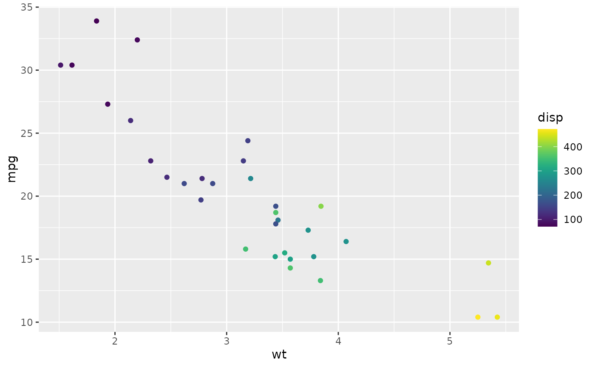

A non-NULL midpoint uses scales::rescale_mid() so the data value at the
midpoint maps to the center of the gradient.
Usage
scale_color_sc_c(
palette = "viridis",
alpha = 1,
reverse = FALSE,
midpoint = NULL,
limits = NULL,
oob = scales::squish,
na.value = "grey85",
...
)
scale_colour_sc_c(
palette = "viridis",
alpha = 1,
reverse = FALSE,
midpoint = NULL,
limits = NULL,
oob = scales::squish,
na.value = "grey85",
...
)
scale_fill_sc_c(
palette = "viridis",
alpha = 1,
reverse = FALSE,
midpoint = NULL,
limits = NULL,
oob = scales::squish,
na.value = "grey85",
...
)Arguments
- palette
Sequential, diverging, or cyclic palette ID.
- alpha
Opacity in
(0, 1].- reverse
Reverse the color sequence.
- midpoint
Optional data midpoint.
- limits
Scale limits.
- oob
Out-of-bounds handler.
- na.value
Missing-value color.
- ...
Passed to
ggplot2::scale_color_gradientn()or its fill variant.
Details
Use the color or colour variant for numeric variables mapped to color, and
the fill variant for numeric variables mapped to fill. Continuous scales
accept sequential, diverging, or cyclic palettes, not qualitative palettes.
For categories, use the _sc_d() family or a persistent _sc_map() scale.
Examples
ggplot2::ggplot(mtcars, ggplot2::aes(wt, mpg, color = disp)) +
ggplot2::geom_point() + scale_color_sc_c("viridis")
